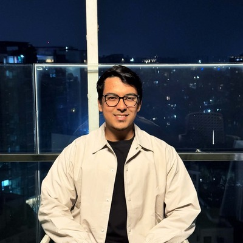

Ahmed Jawad Rashid
Junior Lecturer · Islamic University of Technology
Electrical engineer working on computer vision for printed circuit board inspection. Based in Gazipur, Bangladesh.
Research in Computer vision·Edge AI·Reinforcement learning
Lives in Gazipur, and:
Education
Degrees from Islamic University of Technology and Notre Dame College.
- Islamic University of Technology M.Sc. in Electrical and Electronic EngineeringCGPA 4.00/4.00 · Supervisor Prof. Dr. Golam Sarowar 2026
- Islamic University of Technology B.Sc. in Electrical and Electronic EngineeringCGPA 3.92/4.00 · 98th percentile · Supervisor Mr. Nadim Ahmed 2024
- Notre Dame College Higher Secondary School CertificateGPA 5.00/5.00 2019
Teaching
Junior Lecturer, Department of EEE, Islamic University of Technology, since September 2024.
- EEE 4709Artificial Intelligence and Machine LearningTheory
- EEE 4710Artificial Intelligence and Machine Learning LabLab
- EEE 4308Digital Logic Design LabLab
- EEE 4404Analog Communication LabLab
- EEE 4542Wireless Communication LabLab
- EEE 4616Microprocessor and Assembly Language LabLab
- EEE 4704Digital Communication LabLab
Honors & Awards
Competitions and programs.
- Transparency International Bangladesh2nd of 100Idea Contest on Renewable Energy · Mentor2024
- HuaweiTop 10 of 1000+Seeds for the Future · Bangladesh2023
- Hult Prize2nd of 30Hult Prize at IUT2023
- East West UniversityNational FinalistAnalytics 2.02021
- IUT Mars RoverGlobal FinalistInternational Rover Design Challenge · Technical documentation2021
Leadership
Student organisations.
- IUT Career and Business SocietyVice President2023
- IUT Mars RoverSenior Electrical Team Member2022
- Notre Dame CollegePresidentInternational Understanding and Relation Club2018
Tools
Python, C/C++, MATLAB, Assembly · PyTorch, TensorFlow, Keras, Scikit-learn, Hugging Face · OpenCV, Ultralytics, Detectron2, torchvision, MMDetection · Gymnasium, Stable-Baselines3 · NumPy, pandas, SciPy, Matplotlib, Seaborn, Plotly · Arduino, Raspberry Pi · KiCAD, Atoll, Proteus · Git, GitHub, Linux, TensorBoard
Projects
-
Computer vision
Open sourcePCBKIT: PCB Defect Dataset Toolkit
PythonOpenCVShapely
Tiles high-resolution PCB images without cutting any defect, and converts YOLO-OBB labels to DOTA.
-
Computer vision
Traffic Vehicle Detection and Counting
YOLOv8OpenCVTracking
YOLOv8 on a custom car and truck dataset (0.93 mAP50), with tracking to count vehicles crossing a line.
-
Control systems
Ball Balancing Platform Control
ArduinoPIDServo
An Arduino ball-on-beam balancer with ultrasonic feedback and a tuned PID controller.
-
Computer architecture
SAP-1 8-bit Computer
Bus designProteus
A simulated 8-bit computer with a shared bus and ring-counter controller running LDA, ADD, SUB, OUT and HLT.
-
Embedded systems
Bluetooth Interfacing with 8051
8051 assemblyHC-05
Bluetooth-controlled timer, Morse code, LED matrix, encryption and relay switching, written in assembly.
-
Digital logic
Digital Snake and Ladder Game
74-series ICsProteus
A two-player game built from logic ICs on a 4×4 LED board, from dice roll to win detection.

Publications
2026
- A. J. Rashid, N. Ahmed, G. Sarowar, P2LK-YOLO: Reallocating feature resolution and large-kernel context for oriented detection of printed circuit board surface defects, submitted to Results in Engineering PDF
- A. J. Rashid, M. A. Ullah, A. Isfara, N. Ahmed, M. M. Mian, M. M. Shalehin, PCB-Defect: An annotated dataset for surface defect detection in printed circuit boards, Data in Brief 64, 112296 PDF
- A. Azam, M. M. Ishti, K. M. Shams, A. J. Rashid, N. Ahmed, DefectDet: An Annotated Dataset of Printed Circuit Boards with Surface Defects, Mendeley Data, V1 doi:10.17632/t9d9zs3bmb.1
- A. J. Rashid, Printed Circuit Board Defect Detection Using Convolutional Neural Networks on Multi-Source Physically Fabricated Datasets, M.Sc. dissertation, Islamic University of Technology. Supervisor: G. Sarowar PDF
2025
- A. J. Rashid, M. A. Ullah, A. Isfara, N. Ahmed, M. Mian, M. M. Shalehin, PCB-Defect: An Annotated Dataset for Surface Defect Detection in Printed Circuit Boards, Mendeley Data, V1 doi:10.17632/vdj74sngvn.2
Opinions
Notes on research, teaching and engineering. Each one takes a few minutes to read.
- Opinion 1: Title of your first piece (Month 2026, 4 min) The first two or three sentences of the piece go here, so a reader can tell what the argument is before clicking through. Keep it to about three lines...
- Opinion 2: Title of your second piece (Month 2026, 6 min) The first two or three sentences of the piece go here, so a reader can tell what the argument is before clicking through. Keep it to about three lines...
- Opinion 3: Title of your third piece (Month 2026, 3 min) The first two or three sentences of the piece go here, so a reader can tell what the argument is before clicking through. Keep it to about three lines...